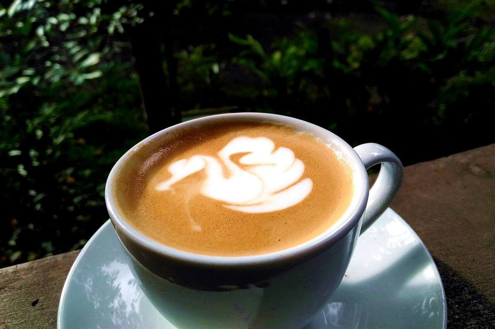

制作側の連想
「エム」から、ローマ数字のM(=1000)へ。
店名の由来は分かりません。制作側は「エムズ」という音から、ローマ数字のM(1000を表す文字)を連想しました。ローマ数字は I・V・X・L・C・D・M の7文字で書けます。そこでこのサイトは、ページ番号をローマ数字にし、トップには7枚の写真を I から M まで、数字が大きくなるほど幅も広がる階段状に並べました。お店の理念や由来とは無関係な、制作側の連想です。
I から M まで(イメージ)
写真の階段
写真はお店のものではなく、国外または撮影地不明のフリー素材です。湯沢町やお店を写したものではありません。
- I1

撮影地不明のイメージ - V5

撮影地不明のイメージ - X10

国外のイメージ(インドネシア) - L50

撮影地不明のイメージ - C100

撮影地不明のイメージ - D500

撮影地不明のイメージ - M1000

撮影地不明のイメージ
ご案内
確認できていること
| 所在地 | 〒949-6101 新潟県南魚沼郡湯沢町湯沢3丁目3-19 2階 |
|---|---|
| 電話 | 025-784-3322 |
| 営業時間 | 準備中 |
| 定休日 | 準備中 |
| ご予約 | 準備中 |
| 駐車場 | 準備中 |
| SNS | Instagram @mscafe_yuzawa |